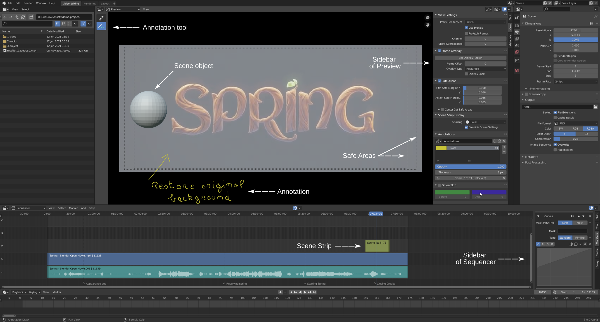

Sidebar¶
Sidebar có thể được bật/tắt bằng mục menu View ‣ Sidebar hoặc bằng phím tắt N.
Ảnh bên dưới cho thấy hai Video Sequencer, một cái ở chế độ Preview và một cái ở chế độ Sequencer, cả hai đều mở Sidebar.

Tool¶
Tham khảo
- Editor:
Video Sequencer
- View Type:
Preview
- Panel:
Sidebar ‣ tab Tool
Các cài đặt cho công cụ đang hoạt động.
- Drag
Cần làm gì khi kéo LMB vào một vị trí khác với gizmo của công cụ.
- Active Tool
Thực hiện cùng hành động như khi kéo gizmo.
- Tweak
Di chuyển ảnh nằm dưới con trỏ chuột.
- Select Box
Kéo một hình chữ nhật chọn và chọn tất cả những ảnh nằm một phần hoặc hoàn toàn bên trong nó.
View¶
View Settings¶
Tham khảo
- Editor:
Video Sequencer
- View Type:
Preview
- Panel:
Sidebar ‣ tab View ‣ View Settings
- Proxy Render Size
Điều khiển độ phân giải xem trước. Giá trị thấp hơn cho chi tiết kém hơn nhưng hiệu năng tốt hơn.
- No Display:
Tắt hoàn toàn phần xem trước.
- Scene Size:
Xem trước ở độ phân giải đầy đủ mà không dùng proxy.
- 25%, 50%, 75%, 100%:
Xem trước ở độ phân giải thu nhỏ, có thể kèm dùng proxy (xem bên dưới). Kể cả khi chọn 100%, bạn vẫn có thể được lợi về hiệu năng nhờ chất lượng ảnh giảm xuống và dung lượng file nhỏ hơn tương ứng.
- Use Proxies
Bật việc dùng proxy — các bản sao của tư liệu gốc được lưu ở độ phân giải và/hoặc chất lượng thấp hơn để có hiệu năng xem trước tốt hơn.
Proxy có thể được cấu hình trong tab Proxy của Sidebar, tuy nhiên tab này chỉ hiển thị ở chế độ Sequencer và Sequencer & Preview.
- Channel
Đặt giá trị này thành 0 sẽ hiển thị tất cả channel. Đặt thành số cao hơn sẽ chỉ hiển thị các channel đến và bao gồm số đó.
- Show Overexposed
Đánh dấu các vùng quá sáng (trắng chói) bằng hoa văn ngựa vằn. Ngưỡng có thể được điều chỉnh bằng thanh trượt.
- Show Missing Media
Render các ảnh/phim bị thiếu bằng màu đỏ tươi đặc. Khi tắt, nội dung thiếu sẽ được render trong suốt hoàn toàn.
Mẹo
Các strip có nội dung thiếu sẽ hiển thị màu đỏ trên timeline.
2D Cursor¶
Tham khảo
- Editor:
Video Sequencer
- View Type:
Preview
- Panel:
Sidebar ‣ tab View ‣ 2D Cursor
2D Cursor là hình tròn trắng-đỏ có chữ thập hiển thị trong vùng preview (miễn là overlay 2D Cursor được bật). Nó có thể được dùng làm Pivot Point khi xoay và scale ảnh.
- Location X, Y
Vị trí của 2D Cursor tính tương đối so với tâm của video. Các cạnh cách 0.5, nên (0.5, 0.5) là góc trên bên phải.
Vị trí của 2D Cursor cũng có thể được đặt bằng công cụ Cursor hoặc bằng cách kéo chuột với Shift-RMB.
Frame Overlay¶
Tham khảo
- Editor:
Video Sequencer
- View Type:
Preview
- Panel:
Sidebar ‣ tab View ‣ Frame Overlay
Frame Overlay cho phép bạn hiển thị một frame tham chiếu để so sánh với frame hiện tại.
- Set Overlay Region
Cho phép bạn kéo một hình chữ nhật để xác định ranh giới của overlay. Thay vì nhấp nút này, bạn cũng có thể nhấn O trong khi di chuột tới vùng preview.
- Frame Offset
Độ lệch thời gian giữa frame tham chiếu và frame hiện tại, tính bằng frame.
- Overlay Type
Frame tham chiếu nên được hiển thị như thế nào.
- Rectangle:
Hiển thị một phần của frame tham chiếu (do Overlay Region xác định) phía trên frame hiện tại.
- Tham khảo:
Chỉ hiển thị frame tham chiếu.
- Current:
Chỉ hiển thị frame hiện tại.
Mẹo
Mỗi editor Video Sequencer có thể có Overlay Type riêng. Nghĩa là bạn có thể mở hai editor để hiển thị frame hiện tại và frame tham chiếu cạnh nhau.
- Overlay Lock
Tiếp tục hiển thị cùng một frame tham chiếu, kể cả khi chuyển sang một thời điểm khác. Tính năng này hoạt động bằng cách tự động điều chỉnh Frame Offset.
Safe Areas¶
Tham khảo
- Editor:
Video Sequencer
- View Type:
Preview
- Panel:
Sidebar ‣ tab View ‣ Safe Areas
Hiển thị các đường dẫn chỉ vùng video nơi nội dung có thể được nhìn thấy trên mọi màn hình.
Xem thêm
Composition Guides¶
Composition Guides bật các lớp phủ lên phần hiển thị preview, có thể hỗ trợ khi bố cục khung hình.
- Thirds
Thêm các đường chia khung hình thành ba phần theo chiều dọc và ngang.
- Center -- Center
Thêm các đường chia khung hình thành hai nửa theo chiều dọc và ngang.
- Center -- Diagonal
Thêm các đường nối các góc đối diện nhau.
- Golden -- Ratio
Chia chiều rộng và chiều cao theo tỷ lệ vàng (khoảng 0.618 kích thước tính từ mọi cạnh của khung hình).
- Golden -- Triangle A
Hiển thị một đường chéo từ góc dưới bên trái đến góc trên bên phải, sau đó thêm các đường vuông góc đi qua góc trên bên trái và góc dưới bên phải.
- Golden -- Triangle B
Giống A, nhưng với các góc đối diện.
- Harmony -- Triangle A
Hiển thị một đường chéo từ góc dưới bên trái đến góc trên bên phải, sau đó là các đường từ góc trên bên trái và góc dưới bên phải đến điểm bằng 0.618 chiều dài cạnh đối diện.
- Harmony -- Triangle B
Giống A, nhưng với các góc đối diện.
- Color
Đặt màu hiển thị và độ mờ (alpha) dùng cho tất cả các lớp phủ composition guide. Hữu ích để điều chỉnh độ nhìn thấy tùy theo độ sáng hoặc độ tương phản của cảnh phía dưới.
Scene Strip Display¶
Tham khảo
- Editor:
Video Sequencer
- View Type:
Preview
- Panel:
Sidebar ‣ tab View ‣ Scene Strip Display
Điều khiển cách Scene Strip được hiển thị trong preview.
- Shading
Chế độ shading sẽ dùng.
- Override Scene Settings
Dùng cài đặt render của Workbench từ scene hiện tại thay vì các scene được strip tham chiếu đến. Chỉ khả dụng cho chế độ shading Wireframe và Solid.
Annotations¶
Tham khảo
- Editor:
Video Sequencer
- View Type:
Preview
- Panel:
Sidebar ‣ tab View ‣ Annotations
Để quản lý các Annotation trong Sequencer.
Metadata¶
Tham khảo
- Editor:
Video Sequencer
- View Type:
Preview
- Panel:
Sidebar ‣ tab Metadata
Liệt kê thông tin đã được mã hóa trong file phim hoặc ảnh đang hiển thị (không phải file được strip đã chọn tham chiếu). Trong đó có thể có tên file, ngày tạo, model máy quay, v.v. Tính năng này cũng hoạt động với ảnh do Blender tạo ra; xem Đầu ra Render để biết những metadata có thể được bao gồm trong trường hợp này.
Các chương trình đồ họa khác cũng có thể lưu metadata, nhưng chỉ có chữ trong trường header "Comments" là đọc được.
Một phần metadata này cũng có thể được hiển thị trong preview bằng overlay Metadata.
Mẹo
Metadata không thể được chỉnh sửa từ Blender. Thay vào đó, bạn có thể dùng một chương trình ngoài như exiftool. Ví dụ, lệnh để thay đổi trường "Comments" là:
exiftool --comments="My new comment" name-of-file.png
Ghi chú
Metadata chỉ được hiển thị cho những ảnh/phim không áp dụng effect.